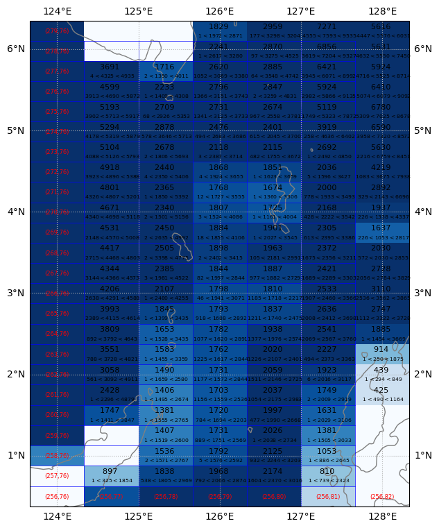
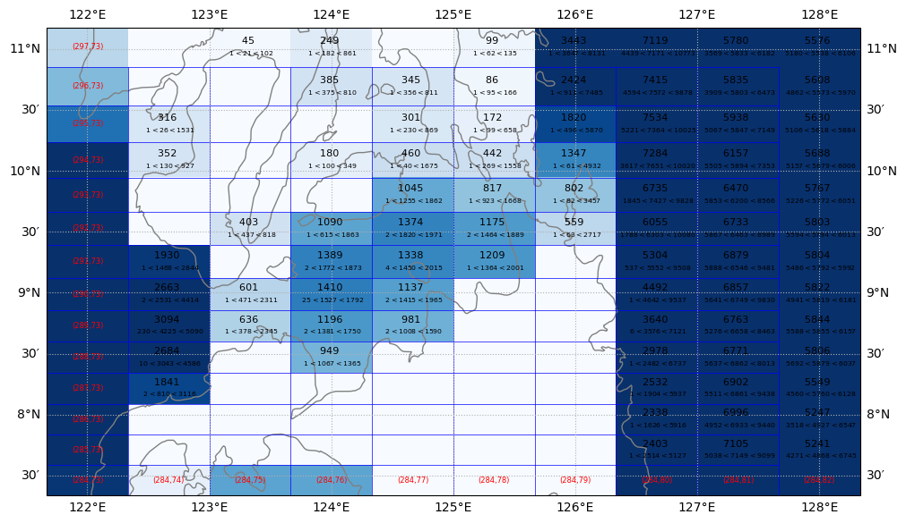

Append hand edit topography modifications to the interpolated topography#
%load_ext autoreload
%autoreload 2
%matplotlib inline
import numpy as np
import xarray as xr
import matplotlib.pyplot as plt
from datetime import datetime
import os
import sys
sys.path.insert(0,os.path.abspath('src/'))
from datetime import date
from topo_edit_util import inspect_topo, create_soc_topo_table
Get input topography data set#
grid = 'tx2_3v2'
topo = 'SRTM15_V2.4'
nsub = 'sub150'
topo_src = 'srtm'
edit = 'edit4'
case = 'SmL1.0_C1.0'
depth_var_in = 'D_interp'
path_root = './'
path_in = path_root
file_in = 'topo.' + nsub + '.' + grid + '.' + topo_src + '.' + edit + '.' + case + '.nc'
print(path_in+file_in)
dss = xr.open_dataset(path_in+file_in)
depth_var_new = 'depth'
dss[depth_var_new] = dss[depth_var_in].copy(deep=True)
./topo.sub150.tx2_3v2.srtm.edit4.SmL1.0_C1.0.nc
dss
<xarray.Dataset>
Dimensions: (lonh: 540, lath: 480, lonq: 541, latq: 481)
Coordinates:
* lonh (lonh) float64 -286.7 -286.0 -285.3 -284.7 ... 71.33 72.0 72.67
* lath (lath) float64 -81.56 -81.46 -81.36 -81.26 ... 89.33 89.6 89.86
* lonq (lonq) float64 -287.0 -286.3 -285.7 -285.0 ... 71.67 72.33 73.0
* latq (latq) float64 -81.61 -81.51 -81.41 -81.31 ... 89.46 89.72 89.91
Data variables: (12/16)
geolon (lath, lonh) float64 ...
geolat (lath, lonh) float64 ...
geolonb (latq, lonq) float64 ...
geolatb (latq, lonq) float64 ...
z (lath, lonh) float32 ...
ocn_frac (lath, lonh) float32 ...
... ...
D_min (lath, lonh) float32 ...
D_max (lath, lonh) float32 ...
hand_edits (lath, lonh) int32 ...
orig_mask (lath, lonh) int32 ...
D_interp (lath, lonh) float32 ...
depth (lath, lonh) float32 ...
Attributes:
Description: Ocean Topography Statistics on MOM6 Grid
Creator: Frank Bryan (bryan@ucar.edu)
Created: 20240216
Generating Code: create_model_topo.f90
Model Grid Version: tx2_3v2
Source Topography Data: /glade/campaign/cgd/oce/datasets/obs/SRTM/SRTM15...
Edit History: Hand Edit + Lake Fill 02/16/2024Hand edit topography changes#
iEdit=[]
jEdit=[]
zEdit = []
Sanhihe Islands (between Philippines and Indonesia)#
place = ' '
#print(soc_table[place])
lon_beg = -236.
lon_end = -231.5
lat_beg = 0.5
lat_end = 6.5
zmax = 2000.
ax=inspect_topo(dss,depth_var_in,lon_beg,lon_end,lat_beg,lat_end,zmax)

i = np.ones(18, dtype=np.int32) * 78
j = np.arange(260,278,1, dtype=np.int32)
z = np.array([900,900,400, 500, 900,300,400,300,500,500,600,900,
950,1000,1100,1200,1100,900],float)
n = np.shape(z)[0]
print(n)
for n in range(n) :
dss[depth_var_new][j[n],i[n]] = z[n]
ax=inspect_topo(dss,depth_var_new,lon_beg,lon_end,lat_beg,lat_end,zmax)
iEdit = np.concatenate((iEdit,i))
jEdit = np.concatenate((jEdit,j))
zEdit = np.concatenate((zEdit,z))
18
Sulu Sea#
place = ' '
#print(soc_table[place])
lon_beg = -238
lon_end = -231.5
lat_beg = 7.5
lat_end = 11.5
zmax = 2000.
ax=inspect_topo(dss,depth_var_in,lon_beg,lon_end,lat_beg,lat_end,zmax)

i = np.array([78,79,79, 79],np.int32)
j = np.array([294,292,293, 294],np.int32)
z = np.array([269,68,82, 61],float)
n = np.shape(z)[0]
print(n)
for n in range(n) :
dss[depth_var_new][j[n],i[n]] = z[n]
ax=inspect_topo(dss,depth_var_new,lon_beg,lon_end,lat_beg,lat_end,zmax)
iEdit = np.concatenate((iEdit,i))
jEdit = np.concatenate((jEdit,j))
zEdit = np.concatenate((zEdit,z))
4
Bosphorus#
## Black Sea / Bosphorus
lon_beg = 28
lon_end = 30.5
lat_beg = 40.5
lat_end = 42.5
zmax = 500.
ax=inspect_topo(dss,depth_var_in,lon_beg,lon_end,lat_beg,lat_end,zmax)

i = np.array([473,],np.int32)
j = np.array([355,],np.int32)
z = np.array([10.],np.int32)
n = np.shape(j)[0]
print(n)
for n in range(n) :
#z = dss['D_median'][j[n],i[n]]
dss[depth_var_new][j[n],i[n]] = z[n]
iEdit = np.concatenate((iEdit,(i[n],)))
jEdit = np.concatenate((jEdit,(j[n],)))
zEdit = np.concatenate((zEdit,(z[n],)))
ax=inspect_topo(dss,depth_var_new,lon_beg,lon_end,lat_beg,lat_end,zmax)
1
Dardanelles#
## Black Sea / Dardannelles
lon_beg = 25
lon_end = 29
lat_beg = 39.5
lat_end = 42
zmax = 500.
ax=inspect_topo(dss,depth_var_in,lon_beg,lon_end,lat_beg,lat_end,zmax)

i = np.array([469,470,],np.int32)
j = np.array([353,353,],np.int32)
n = np.shape(j)[0]
print(n)
for n in range(n) :
z = dss['D_median'][j[n],i[n]]
dss[depth_var_new][j[n],i[n]] = z
iEdit = np.concatenate((iEdit,(i[n],)))
jEdit = np.concatenate((jEdit,(j[n],)))
zEdit = np.concatenate((zEdit,(z,)))
ax=inspect_topo(dss,depth_var_new,lon_beg,lon_end,lat_beg,lat_end,zmax)
2

Set up output file#
path_out = path_in
file_out_topo = 'ocean_topo_{}_{}{}{}.nc'.format(grid,datetime.now().isoformat()[2:4],datetime.now().isoformat()[5:7],
datetime.now().isoformat()[8:10])
print('topo edit file : ',file_out_topo)
topo edit file : ocean_topo_tx2_3v2_240501.nc
Create output dataset#
nlong = np.int32(np.shape(dss[depth_var_new])[0])
nlatg = np.int32(np.shape(dss[depth_var_new])[1])
print(nlong,nlatg)
nEdits = np.shape(zEdit)
ds_edits = xr.Dataset(
{'iEdit': (['nEdits'], iEdit.astype('int32'), {'long_name' : "i-index of edited depth"}),
'jEdit': (['nEdits'], jEdit.astype('int32'), {'long_name' : "j-index of edited depth"}),
'zEdit': (['nEdits'], zEdit, {'long_name' : "New value of depth", 'units' : 'meters'}),
}
)
ds_edits.attrs['title'] = 'Topography Edits'
ds_edits.attrs['original grid'] = file_in
ds_edits
480 540
<xarray.Dataset>
Dimensions: (nEdits: 25)
Dimensions without coordinates: nEdits
Data variables:
iEdit (nEdits) int32 78 78 78 78 78 78 78 78 ... 78 79 79 79 473 469 470
jEdit (nEdits) int32 260 261 262 263 264 265 ... 292 293 294 355 353 353
zEdit (nEdits) float64 900.0 900.0 400.0 500.0 ... 61.0 10.0 97.67 49.45
Attributes:
title: Topography Edits
original grid: topo.sub150.tx2_3v2.srtm.edit4.SmL1.0_C1.0.ncds_out = xr.merge([dss, ds_edits])
ds_out
<xarray.Dataset>
Dimensions: (lonh: 540, lath: 480, lonq: 541, latq: 481, nEdits: 25)
Coordinates:
* lonh (lonh) float64 -286.7 -286.0 -285.3 -284.7 ... 71.33 72.0 72.67
* lath (lath) float64 -81.56 -81.46 -81.36 -81.26 ... 89.33 89.6 89.86
* lonq (lonq) float64 -287.0 -286.3 -285.7 -285.0 ... 71.67 72.33 73.0
* latq (latq) float64 -81.61 -81.51 -81.41 -81.31 ... 89.46 89.72 89.91
Dimensions without coordinates: nEdits
Data variables: (12/19)
geolon (lath, lonh) float64 ...
geolat (lath, lonh) float64 ...
geolonb (latq, lonq) float64 ...
geolatb (latq, lonq) float64 ...
z (lath, lonh) float32 ...
ocn_frac (lath, lonh) float32 ...
... ...
orig_mask (lath, lonh) int32 ...
D_interp (lath, lonh) float32 ...
depth (lath, lonh) float32 ...
iEdit (nEdits) int32 78 78 78 78 78 78 78 ... 78 79 79 79 473 469 470
jEdit (nEdits) int32 260 261 262 263 264 265 ... 293 294 355 353 353
zEdit (nEdits) float64 900.0 900.0 400.0 500.0 ... 10.0 97.67 49.45
Attributes:
Description: Ocean Topography Statistics on MOM6 Grid
Creator: Frank Bryan (bryan@ucar.edu)
Created: 20240216
Generating Code: create_model_topo.f90
Model Grid Version: tx2_3v2
Source Topography Data: /glade/campaign/cgd/oce/datasets/obs/SRTM/SRTM15...
Edit History: Hand Edit + Lake Fill 02/16/2024ds_out.attrs['Manual edits updated on:'] = datetime.now().isoformat()
ds_out.attrs['By:'] = 'Gustavo Marques (gmarques@ucar.edu)'
ds_out.attrs['url'] = 'https://github.com/NCAR/tx2_3/topography/Append_topo_edits.ipynb'
ds_out.to_netcdf(path_out+file_out_topo)
/glade/u/apps/opt/conda/envs/npl-2024a/lib/python3.11/site-packages/dask/config.py:742: FutureWarning: Dask configuration key 'allowed-failures' has been deprecated; please use 'distributed.scheduler.allowed-failures' instead
warnings.warn(
file_out_topo
'ocean_topo_tx2_3v2_240501.nc'